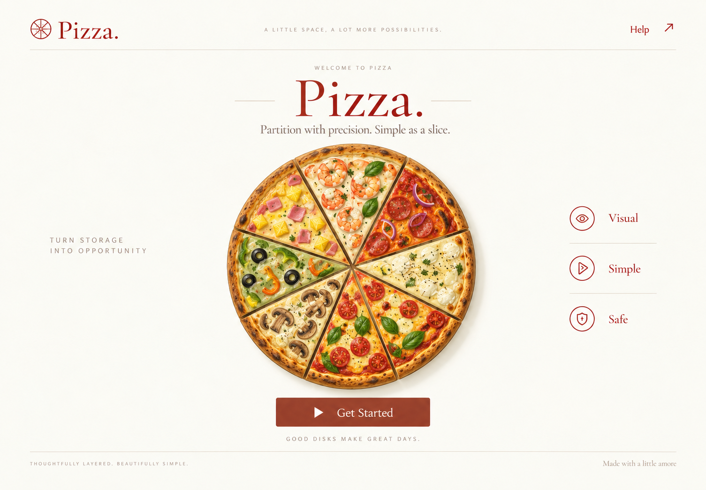
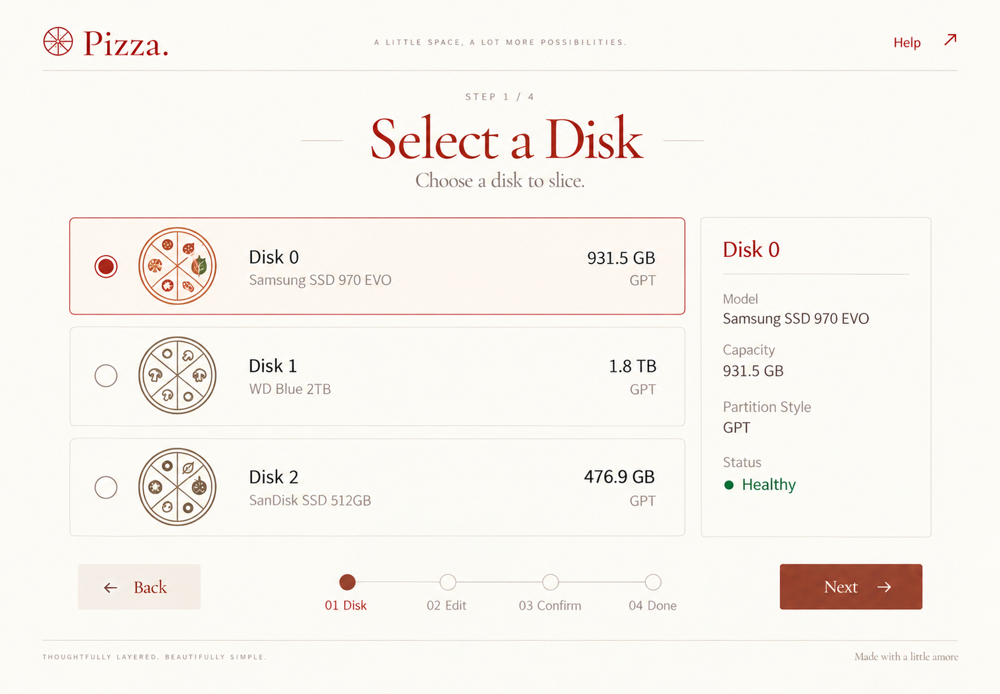
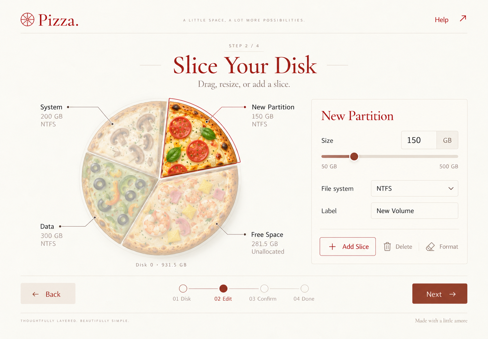
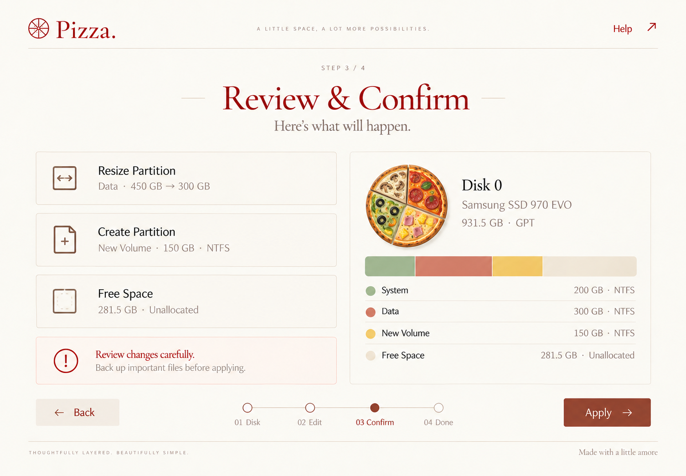
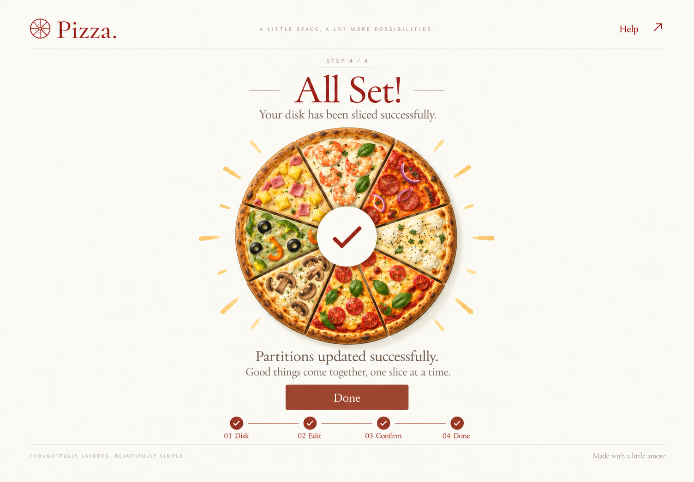

Pizza.
五张独立生图关键帧，以及十四份原生 SVG 素材。
欢迎页和完成页全部实色；仅第三幕中未选中的披萨分区淡化。第二幕使用简笔披萨图标。
下载完整素材包 ↓ · 完整生图提示词
Original Pizza source
已打包用户指定代码库的原版披萨绘制、配料路径、体积光照、阴影及运行入口。查看复用说明 · 原版渲染参考 · 原样复制校验记录。需要与原版保持一致时，以这份源码为准。
Keyframes

01 · Welcome PNG ↓
02 · Select a Disk PNG ↓
03 · Slice Your Disk PNG ↓
04 · Review & Confirm PNG ↓
05 · All Set! PNG ↓Vector ingredients
12 个线描图标采用 currentColor，可修改颜色；2 幅彩色插画是按切片分组的简化示意，与原版并不相同。图标背景透明，添加／调整／完成图标的徽章底色可通过 --pizza-surface 修改。
Usage
磁盘列表推荐 pizza-disk-classic / funghi / garden；24px 小尺寸推荐 pizza-disk-24；页头推荐 pizza-mark。彩色 pizza-eight-recipes 的所有切片均为实色，pizza-edit-selection 专门演示编辑状态。
图标为本次原创 SVG 绘制；配料类型和暖色方案参考用户指定的 native-blend2d/src/artwork.cpp。界面 PNG 使用内置 image_gen 工具生成，作为视觉关键帧参考。实际实现时，分区角度应由容量计算。